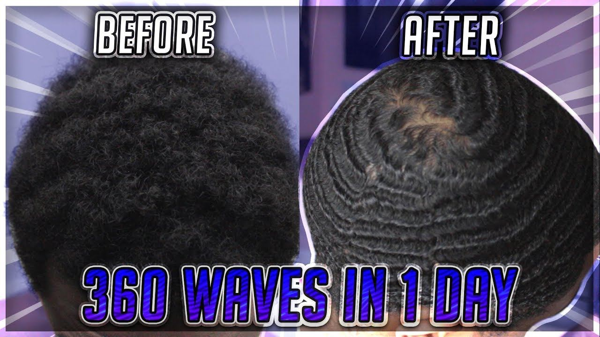

Waves in One Day: The Wash Method for Instant Definition
Let us be honest first, because this topic collects more hype than any other in wave culture: no method creates a trained 360 pattern from nothing in one day. What the one-day wash method genuinely does — as King Infinity (@KingInfinity) demonstrates in the video below — is take hair that already has curl and some training, and pull out every bit of definition it has, in a single wash day. For beginners in week two or three, it can be the first time the pattern really shows itself. Here is the method, and how to use it honestly.
Who this works for (and who it won't)
The wash method works on hair with natural curl or wave that has been brushed consistently for at least a week or two. The waves are already forming under the surface frizz — the wash removes the frizz, lays everything in direction, and dries it under compression so the pattern sets hard. The result can look like a month of progress arriving in one afternoon.
It will not work on hair with no curl pattern, on hair cut too short to lay, or as a substitute for daily brushing. Think of it as a reveal, not a creation. If your reveal shows nothing, the answer is more weeks of brush work — then reveal again.
The sequence, step by step
Start on dry, brushed hair. Wet it thoroughly, shampoo once, and brush the lather through in pattern directions for several minutes — the brush does the styling while the shampoo cleans. Rinse, condition, and brush again with the conditioner in. Rinse lightly, leaving the hair feeling slick rather than squeaky.
While the hair is still damp, add a light moisturiser, give it one final thorough brush session in all directions, then tie your durag immediately. The crucial part: leave the durag on until the hair is completely dry — several hours, or overnight. Every bit of drying that happens outside compression is definition leaking away.
Making the result last
When you untie, your hair will be as defined as it can possibly be. Protect the investment: brush lightly to lift the pattern, moisturise sparingly (too much product on reveal day weighs it down), and get the durag back on for the following night without skipping.
Use the one-day method as your weekly wash day, not a daily trick. Daily washing dries hair and scalp and will stall your progress. Once a week, run the full method; the other six days, brush and compress. That rhythm is what turns a one-day reveal into a permanent pattern.
Watch: How To Get 360 Waves In 1 Day | Wash Method | King Infinity
Video: “How To Get 360 Waves In 1 Day | Wash Method | King Infinity” by King Infinity (@KingInfinity) · Watch on YouTube
Shop the gear
Everything in this guide runs on the right gear: a durag that holds compression without slipping, a cap that stays put, and fabric that treats your hair right. The durag.store launch lineup is built to that standard — dual-layer construction, long tails, and stitching made to survive the routine. Join the launch list and use code GOLDSTANDARD for 15% off your first order.
Keep learning
- How to Get 360 Waves: The Complete Beginner Roadmap — Basic · Wave Training
- 540 Waves: The Diagonal Pattern for Wavers Ready to Level Up — Extreme · Wave Training
- 720 Waves: The Full-Spin Pattern and the Wolf It Demands — Extreme · Wave Training
Sources: Video — “How To Get 360 Waves In 1 Day | Wash Method | King Infinity” by King Infinity (@KingInfinity), youtube.com. Guide written by the durag.store Wave Lab.